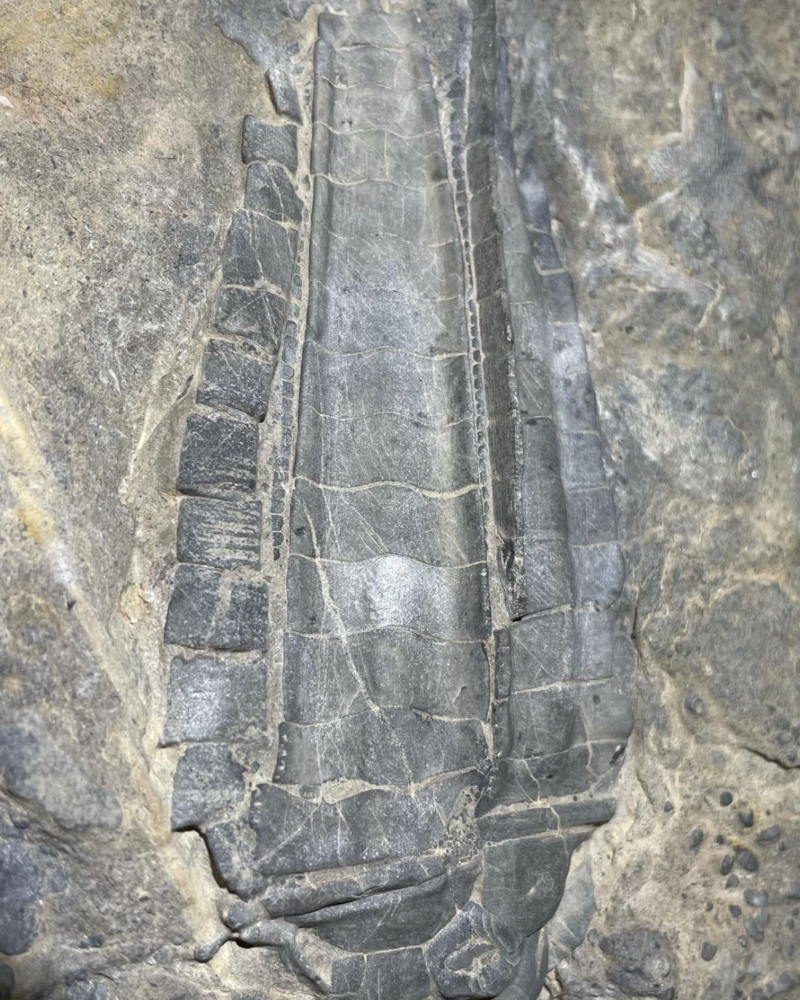
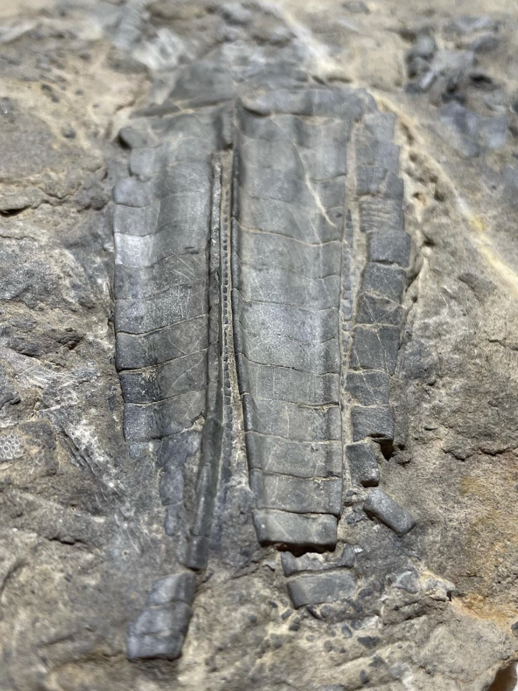
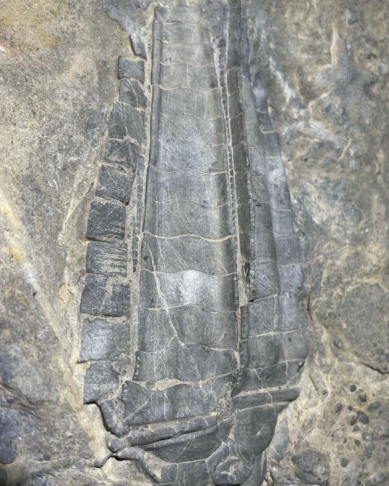
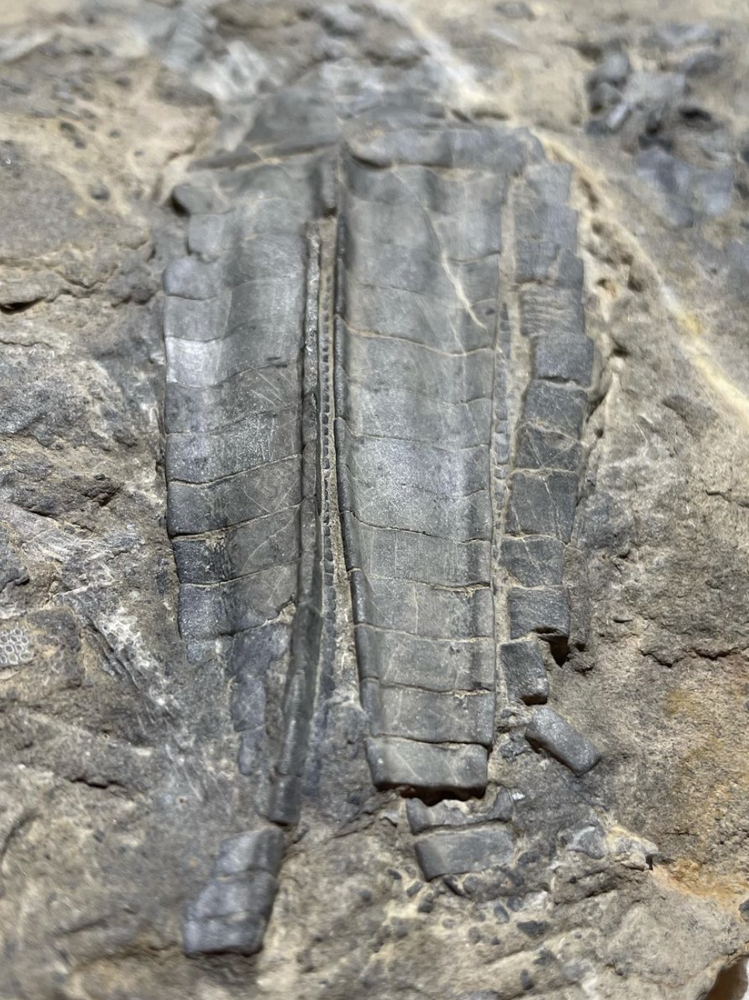

Cupressocrinites sp.
Devonian
Draa Valley, Morocco, Africa
Size: 11 cm crown
Morocco produces a rich variety of Ordovician, Silurian and Devonian crinoids that seem relatively poorly studied. One of the most recognizeable among the Devonian crinoids are ones such as this one referred to as "Cupressocrinites sp.", presumably with affinities to the more well-known European species. This is a cladid with closely-abutting wide, unbranched arms made of extraordinarily blocky, armor-like brachials. The unusual crown always reminds me of a cacao bean or some sort of seed/fruit pod. There also seem to be multiple species or variants. On this particular specimen, the dorsal surface of the arms is incredibly flat and smooth relative to the raised edges, making the arms appear almost concave on the outside.
 
